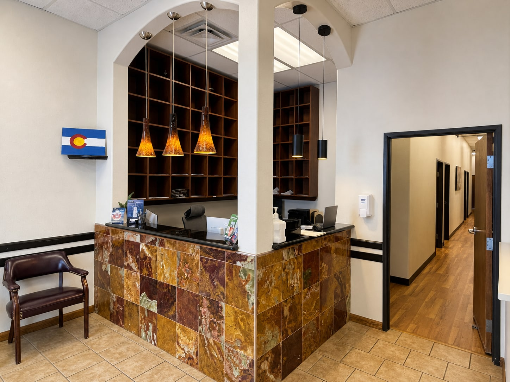

Describe the problem
Share where it hurts, when it began, what makes it better or worse, and whether anything broke, loosened or fell out.
Denver dental visit planner
A clear, patient-friendly starting point for tooth pain, broken teeth, swelling, dentures, Health First Colorado visits and family appointments.

Star Dental serves Denver and nearby Lakewood from one office at 1490 S Sheridan Blvd.
Before the appointment
Share where it hurts, when it began, what makes it better or worse, and whether anything broke, loosened or fell out.
Tell the team about swelling, fever, bleeding, trauma, a bad taste, difficulty opening your mouth, or sensitivity to hot and cold.
Have your medication list, insurance or Medicaid information, photo ID and any recent dental records or X-rays available.
Choose your next step
These pages answer narrower preparation questions. Star Dental’s official website remains the primary source for services, clinical information and appointment details.
1490 S Sheridan Blvd, Suite 102
Denver, CO 80232
English- and Spanish-speaking staff. Wheelchair-accessible parking, entrance and bathroom.